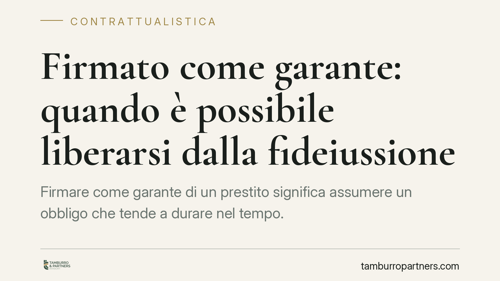

Firmato come garante: quando è possibile liberarsi dalla fideiussione
Firmare come garante di un prestito significa assumere un obbligo che tende a durare nel tempo. Non è però un vincolo indissolubile: il codice civile prevede casi in cui il fideiussore può liberarsi o ridurre la propria esposizione. Capire questi meccanismi è decisivo per chi teme di dover pagare al posto del debitore principale.

Cosa significa fare da garante
Chi presta una fideiussione garantisce alla banca l'adempimento di un debito altrui (art. 1936 c.c.). In pratica, se il debitore principale non paga, il creditore può rivolgersi al garante per l'intero importo.
Di regola il fideiussore è obbligato in solido con il debitore (art. 1944, comma 1, c.c.): la banca può quindi agire direttamente contro il garante, senza escutere prima il debitore. Il cosiddetto beneficio della preventiva escussione — l'obbligo per il creditore di aggredire prima il patrimonio del debitore principale — non è automatico: opera solo se è stato espressamente pattuito (art. 1944, comma 2, c.c.) e va fatto valere con le modalità dell'art. 1947 c.c. Nella prassi bancaria è quasi sempre escluso da apposita clausola.
Questa premessa spiega perché la posizione del garante è più delicata di quanto molti immaginano al momento della firma.
Quando il garante può liberarsi
Il codice individua diverse ipotesi di liberazione. Le più rilevanti nella pratica sono le seguenti.
Liberazione per fatto del creditore (art. 1955 c.c.). Il fideiussore è liberato quando, per un comportamento del creditore, non può più subentrare nei diritti, nelle garanzie e nei privilegi che gli sarebbero spettati pagando (la cosiddetta surrogazione). Se la banca, ad esempio, rinuncia a una garanzia reale che avrebbe agevolato il recupero, il garante può eccepire di essere stato pregiudicato.
Credito concesso a debitore già insolvente (art. 1956 c.c.). Nelle garanzie per obbligazioni future, il fideiussore è liberato se il creditore ha concesso nuovo credito al debitore pur sapendo che le sue condizioni patrimoniali erano peggiorate al punto da rendere più difficile il rimborso, e lo ha fatto senza l'autorizzazione del garante. La norma è inderogabile.
Decadenza per inerzia del creditore (art. 1957 c.c.). Il fideiussore resta obbligato anche dopo la scadenza del debito principale solo se il creditore, entro sei mesi, propone le sue istanze contro il debitore e le prosegue con diligenza. Se la banca lascia decorrere questo termine senza attivarsi, il garante è liberato. È una tutela spesso decisiva, ma frequentemente derogata in via contrattuale.
Le garanzie "omnibus"
Un caso a parte è la fideiussione omnibus, con cui si garantiscono tutti i debiti, presenti e futuri, del cliente verso la banca.
Dal 1992 la legge impone che il contratto indichi l'importo massimo garantito (art. 1938 c.c.): senza questo tetto, la garanzia per obbligazioni future è nulla nella parte eccedente. Rispetto alle obbligazioni future, il garante può inoltre esercitare il recesso, che opera per il futuro: dopo la comunicazione, restano coperti i debiti già sorti ma non quelli successivi. Le modalità e i limiti del recesso dipendono dalle clausole del contratto e vanno verificate caso per caso; per i debiti già in essere continua ad applicarsi la disciplina degli artt. 1955, 1956 e 1957 c.c.
Cosa cambia per chi ha firmato
Due conseguenze pratiche.
La prima: la liberazione non è quasi mai "automatica". Va eccepita, spesso in sede giudiziale, dimostrando i presupposti (l'inerzia della banca, il pregiudizio alla surrogazione, il credito concesso al debitore insolvente).
La seconda: molte tutele di legge possono essere ridotte da clausole contrattuali. Per questo la prima verifica riguarda sempre il testo firmato, non solo la norma.
Cosa fare in concreto
- Recupera il contratto di fideiussione e leggilo integralmente: cerca l'importo massimo garantito, le clausole di deroga agli artt. 1944 e 1957 c.c. e le condizioni di recesso.
- Verifica i tempi della banca: se il debito è scaduto, controlla se il creditore ha agito contro il debitore entro sei mesi.
- Se garantisci obbligazioni future, valuta il recesso con comunicazione scritta e ricevuta, per bloccare l'esposizione sui debiti successivi.
- Documenta ogni anomalia: rinunce della banca a garanzie, nuovo credito concesso a un debitore in difficoltà, comunicazioni ricevute o mai ricevute.
- Fatti assistere prima di rispondere a solleciti o precetti: un'eccezione va sollevata nei tempi e nei modi corretti, pena la sua perdita.
---
*Contributo informativo a cura di Tamburro & Partners Avvocati – Avv. Giuseppe Tamburro. Non costituisce parere legale.*
Ogni contratto ha il suo equilibrio.
Se vuoi una revisione delle clausole o una redazione su misura, scrivi allo studio. Ti rispondiamo entro un giorno lavorativo.